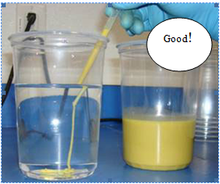

Определение содержания общего железа в кислоте
Подготовка пробы
- Возьмите пробу кислоты, в которой необходимо измерить железо.
- В 100мл чистую мерную колбу отмерить шприцом 0.2 мл кислоты.
- Разбавить дистиллированной водой до метки и перемешать.
- Перелить всю разбавленную пробу в стакан, pH-метр измерить рН, если он ниже 5, необходимо отобрать в 1мл шприц ровно 1мл раствор NaOH, добавлять его по каплям, размешивать и измерять рН по мере его добавления. Нейтрализовывать NaOH до тех пор пока рН не будет в диапазоне 5-7. Записать сколько точно мл NaOH было добавлено.
Определеие содержания общего железа
- 1. Включить спектрофотометр за 20 минут до начала измерений (кювета при этом не должна находиться внутри прибора), подождите пока выполнится внутренняя калибровка. На экране высветится главное меню.
- Выберите на экране – Методики в памяти
- Выбрать методику 265 Железо FerroVer 3.0 мг/Л
- Налить в кювету приблизительно 10мл приготовленной пробы, вставить кювету в спектрофотометр, закрыть крышку, нажать на дисплее Ноль. На экране высветится ноль, мг/Л.
- Отобрать 25мл подготовленной пробы в стакан, добавить 1 пакетик FerroVer (кат.№ 854-99), размешать и подождать 3 минуты, для полного протекания реакции.
- . Налить в чистую вымытую кювету ~10мл пробы с FerroVer, поместить кювету в спектрофотометр и нажать измерение.
- На дисплее высветится результат в мг/Л.
- Рассчитать общее содержание железа: показания прибора * 500 (разбавление) = Fe мг/Л
Если добавлялся NaOH, учитывать его объем при пересчете. Например: 0,45мл NaOH
Показания прибора*(100,45/0,2) = показания * 502.25
- Пересчет в ппм = (мг/Л) / SG кислоты.
- В некоторых случаях, когда содержание железа особенно много, необходимо увеличить разбавление – изначально брать 0.1 мл кислоты.
Примечание: Необходимо перед каждым измерением тщательно мыть и насухо вытирать кювеут – не должно быть разводов на стенках.
Разбавлять нужно очень точно и желательно в мерной колбе – так как показания спектрофотомера сильно зависят от аккуратности проведения тестов – погрешность может быть ± 500 ppm.
Тестирование и замес SXE
SXE – это эмульсия кислоты в дизеле в соотношении 70:30 плюс эмульгатор U108. Количество ингибитора A262, L058 расчитывается на объем кислоты, а вычитается из объема кислоты, количество эмульгатора расчитывается на общий объем SXE, а вычитается из объема дизеля.
- Налить требуемый объем воды, добавит ингибитор (если необходимо L058), добавить кислоту, перемешать.
- Налить в сухой блендер требуемое количество дизеля, включить блендер на высокой скорости, но так, чтобы дизель не расплекивался. Медленно добавить эмульгатор, чтобы он хорошо размешался.
- Медленно добавлять кислотный раствор в дизельную смесь, причем: 20% объема кислотного раствора добавлять в течении 5 минут, остальую часть добавлять в течении 10 минут.
- Должна получиться вязкая, однородная эмульсия.
- Смотреть в течении 5-30 минут, чтобы убедиться, что не происходит отслоение дизеля (необходимо помнить, что так как дизеля в эмульсии всего 30%, то расслоение даже на 5% может быть критично!).
- Проверить эмульсию после замеса – провести “snake” тест.
Набрать в 1мл шприц SXE, опустить в стакан с водой и выдавить эмульсию в воду. Эмульсия не должна диспергироваться в воде, должна опуститься змейкой на дно (см. картинку).
